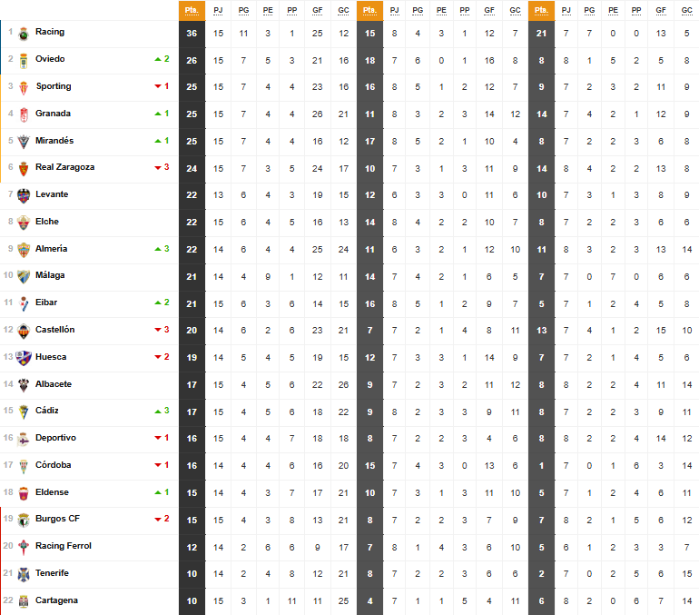

Clasificación actual

El Málaga CF ya es el equipo menos goleado de Segunda División.
El equipo blanquiazul mantenía una batalla de cuerpo a cuerpo frente al Mirandés, pero la jornada 15 lo ha
terminado de decantar todo. El equipo de Alessio Lisci recibió un sol gol por parte del Castellón (1-3) y los
deberes para los de Sergio Pellicer eran muy claros: mantener la portería a cero. Pues lo hicieron y con un ejercicio
de defensa magistral para sacar un punto de La Romareda y convertirse en el equipo que menos tantos ha encajado de Segunda División.
El Málaga firma con 65 clubes de la ciudad para fortalecer la cantera.
La Ciudad Deportiva Fundación MCF fue testigo, este martes 19 de noviembre, de una jornada histórica para el fútbol malagueño. A las 19:00 horas, más 60 clubes de
la provincia se dieron cita para la firma de un acuerdo marco entre el Málaga CF y los equipos costasoleños. Esta colaboración
que marca un hito en la conexión entre la institución malaguista y la base futbolística local, tiene como objetivo
impulsar el desarrollo del fútbol base y fomentar sinergias formativas a cambio de canalizar el extraordinario talento.